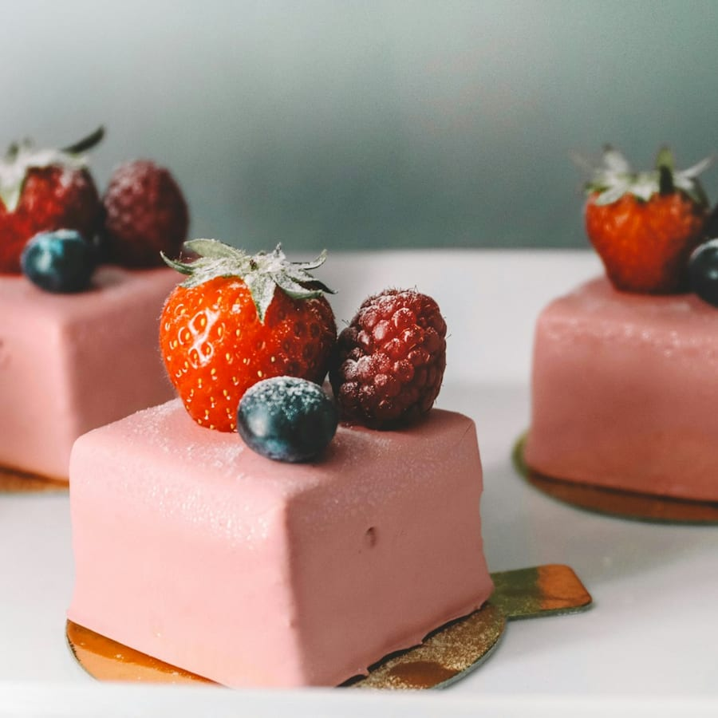
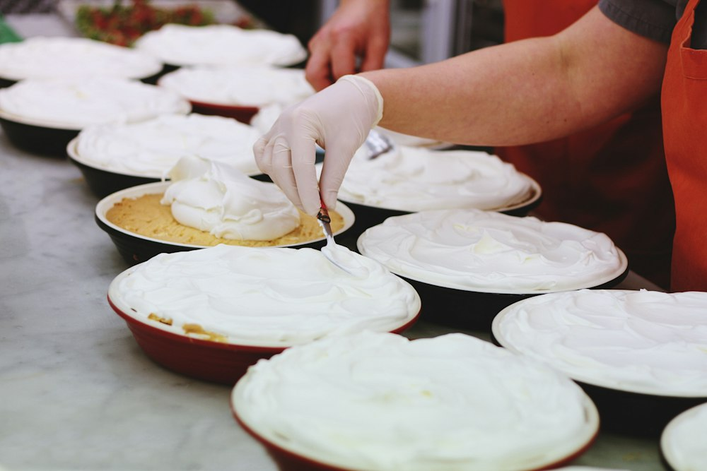
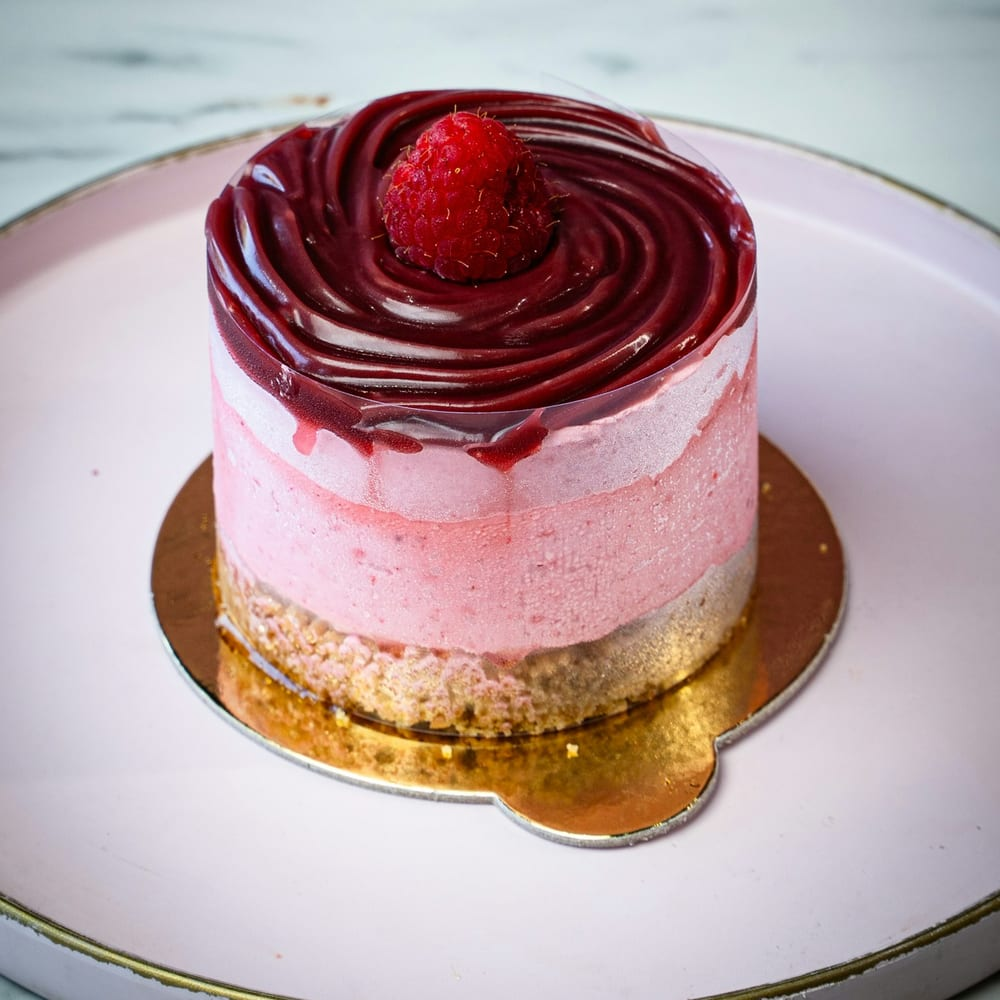
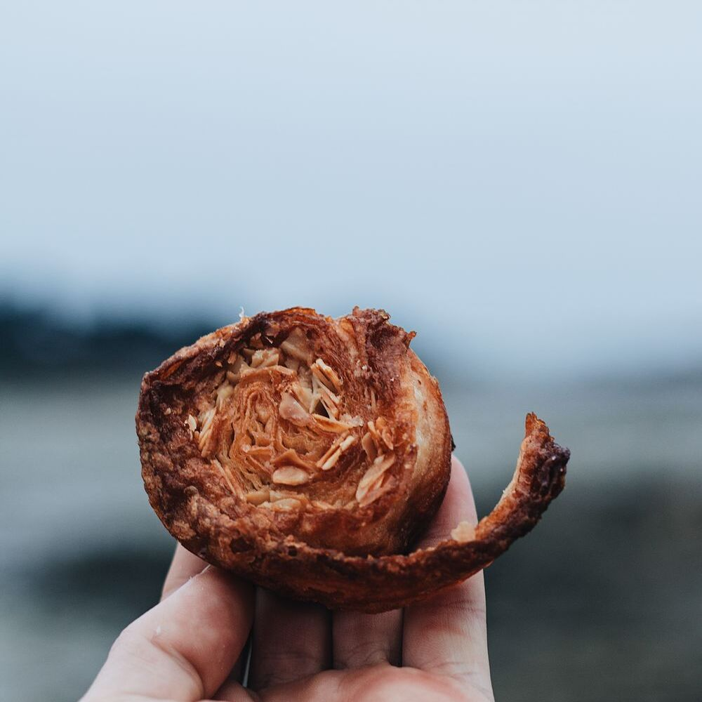
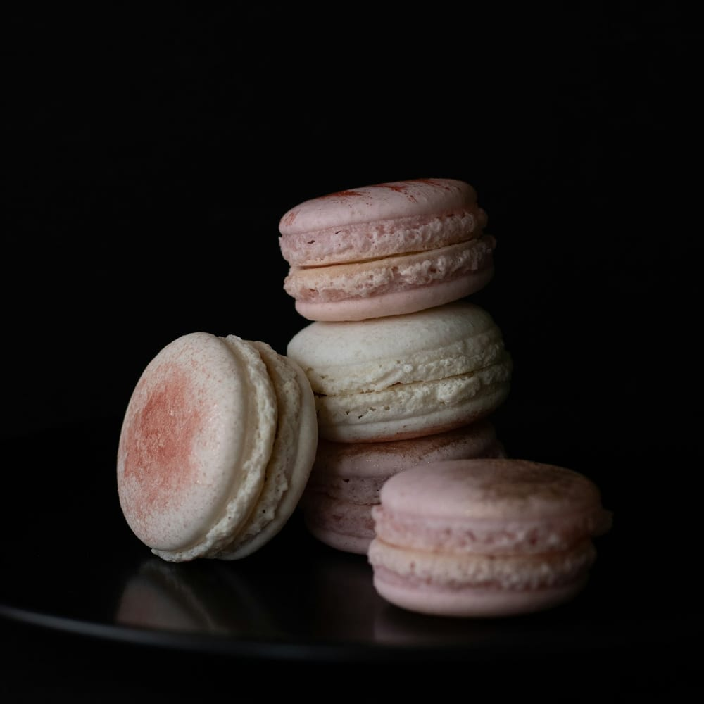
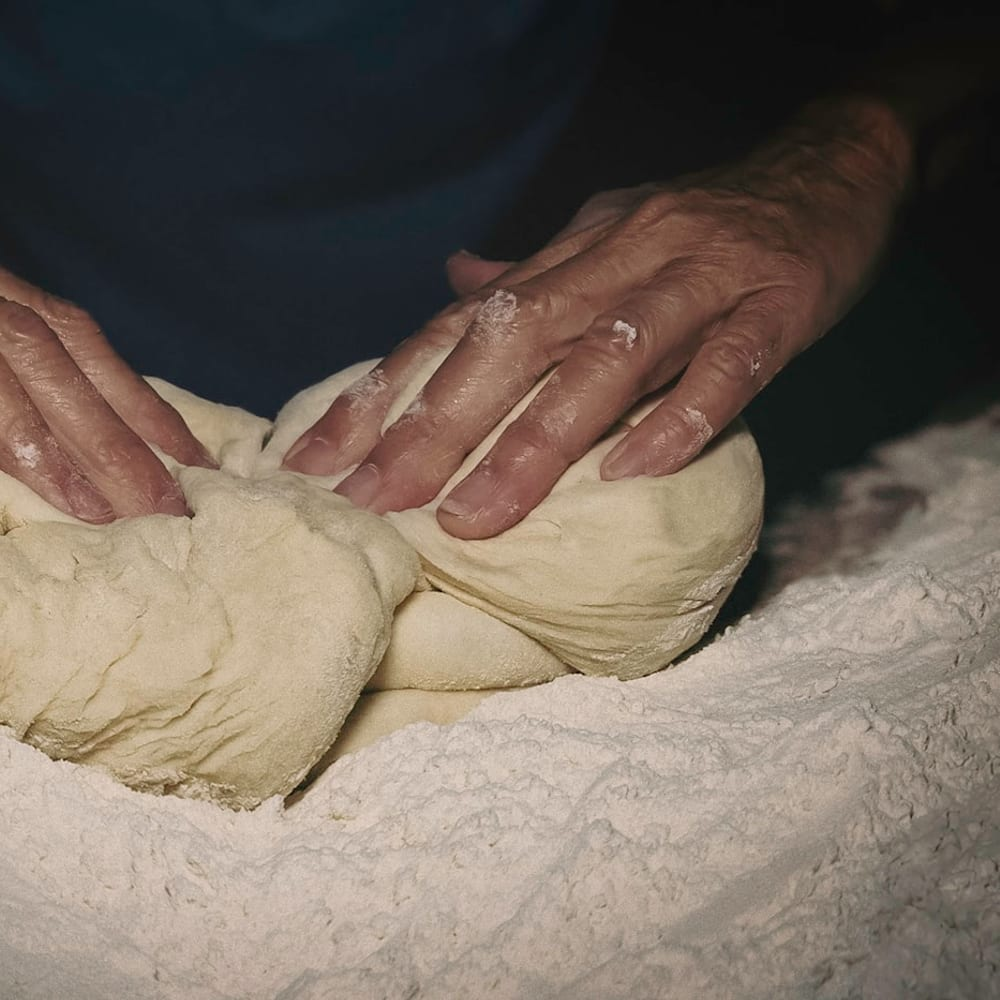
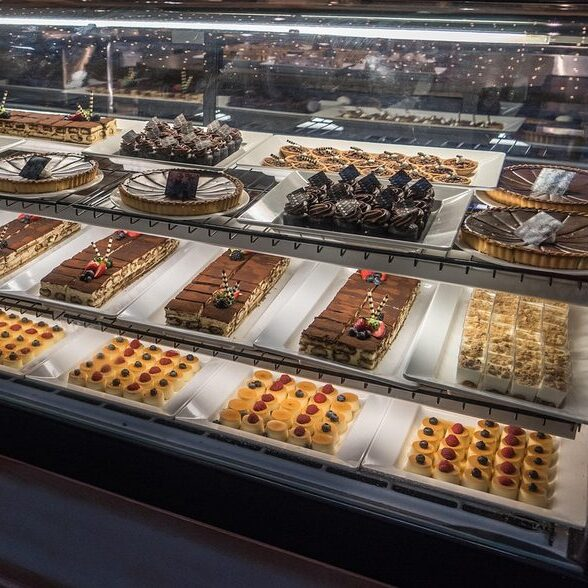

Champagne Rose
Champagne & Rose
Champagne mousse, rose-litchi gelée, almond dacquoise, and a blush mirror glaze dusted with edible silver. Our most requested creation.
Signature
San Francisco · Est. 2018
Entremets, viennoiserie, macarons, and bespoke gâteaux — crafted daily by Maître Pâtissière Hélène Marchand using classical French technique and California's finest seasonal produce.
Opened
2018
Baked
Twice daily, 8 & 11 am
Gâteaux
Made to order

Petit Fraisier
Entremet du Jour
Limited — 8 per day
La Collection
Four disciplines. One unwavering standard. Every piece assembled fresh each morning.
Multi-layered mousse cakes with mirror glazes and sculpted finishes. Each is assembled over two days and limited to eight portions.
Champagne & Rose
Champagne mousse, rose-litchi gelée, almond dacquoise, and a blush mirror glaze dusted with edible silver. Our most requested creation.
Pistache & Praline
Sicilian pistachio mousse over feuilletine croustillant, hazelnut praline insert, and a pistachio velvet finish.
Chocolat & Caramel
72% dark chocolate mousse, salted caramel insert, chocolate biscuit joconde, mirror glaze. Intense and deeply satisfying.
Yuzu & Fleur de Sureau
Yuzu curd mousse, elderflower panna cotta insert, genoise légère, and a pale gold glaze. Spring–summer only.
Hand-laminated pastry using 84% cultured butter and a 72-hour cold-ferment process. Baked in two rounds — 8 AM and 11 AM.
The foundation. 27 alternating layers of dough and cultured butter. Shatters on touch, melts on the palate.
Breton laminated dough folded with cane sugar and salted butter. Deeply caramelised crust, tender center. Twelve made daily.
Two batons of 66% dark chocolate encased in laminated dough. Slightly bitter counterpoint to the butter.
Rolled croissant dough spiralled with pistachio frangipane and candied orange. A Maison Véron original.
Rough-puff pastry enclosing compote of Granny Smith apples, vanilla, and a touch of calvados. Weekend only.
French meringue macarons aged overnight for the ideal chew. A rotating seasonal selection with four permanent signatures.
Rose & Framboise
Rose-scented shell, raspberry and rose ganache, a crystallised rose petal. The house signature.
Madagascan bourbon vanilla bean infused into a Swiss meringue buttercream. Pale ivory and flawlessly simple.
Chocolat Intense
70% dark chocolate ganache, a touch of fleur de sel. For those who prefer depth over sweetness.
Saveur de Saison
Changes with the market. Yuzu tart, fig & honey, saffron mango, wild blackcurrant — ask at the counter.
Whole cakes for celebrations and ceremonies. Each is assembled to order and requires 72 hours minimum notice.
Fraisier de Saison
Génoise légère, mousseline cream, fresh-market strawberries, mirror glaze. Spring–summer. Serves 8–10.
Holiday log cake in rotating flavours. Champagne & pear, chestnut & praline, or dark chocolate. Serves 10.
Pièce Montée
Multi-tiered celebration cake designed in consultation with our maître pâtissier. Custom flavour profiles, décor, and scale. For weddings, galas, and milestone events.
Tarte aux Fruits de Saison
Pâte sucrée shell, vanilla pastry cream, seasonal market fruit arranged in the classic Parisian style. Available in 20cm and 26cm.
Summer 2026
Each season, our maître pâtissier curates a limited collection around the finest market arrivals. Summer 2026 centres on white peach, lavender, and verbena — delicate, floral, and ephemeral. Available through September.
Pêche Blanche & Verveine
White peach mousse, verbena gelée, lemon sablé breton.
Lavande & Miel de Provence
Lavender honey ganache, fleur de sel caramel, almond streusel.
Figue & Fromage Blanc
Slow-roasted fig compote, fromage blanc mousse, walnut crumble. Coming August.
Bientôt disponible
Commande Spéciale
For bespoke gâteaux, private catering and wholesale enquiries, send us your occasion, date and ideas. Our team responds within one business day. For urgent matters, call us directly.
Send your enquiry
Share your occasion, date, and vision. We respond within one business day.
Design consultation
Hélène discusses flavour profiles, scale, and aesthetic direction in person or by video.
Tasting & confirmation
A private tasting of your chosen flavours before we confirm the commission. Minimum 72 hours notice for gâteaux.

Hélène Marchand
Maître Pâtissière & Fondatrice
La Maison
Hélène Marchand trained in Lyon and Paris before opening Maison Véron in San Francisco in 2018 — bringing the rigour of classical French technique to California's abundance of seasonal produce.
Her philosophy is precise and uncompromising: every layer must serve a purpose; every flavour must earn its place. The result is pâtisserie that is simultaneously faithful to tradition and responsive to the season.
How We Work
2018
Opened
Lyon & Paris
Training
≤ 40
Daily Entremets
12 kg
Butter (weekly)
Galerie





Horaires
| Lundi / Monday | Fermé / Closed |
| Mardi / Tuesday | 8:00 – 18:00 |
| Mercredi / Wednesday | 8:00 – 18:00 |
| Jeudi / Thursday | 8:00 – 18:00 |
| Vendredi / Friday | 8:00 – 19:00 |
| Samedi / Saturday | 8:00 – 19:00 |
| Dimanche / Sunday | 9:00 – 14:00 |
Samedi / Saturday: Seasonal tasting window 10–12
Dimanche / Sunday: Sunday brunch selections
Adresse
Maison Véron
24 Rue Saint-Honoré, San Francisco, CA 94108
Getting Here